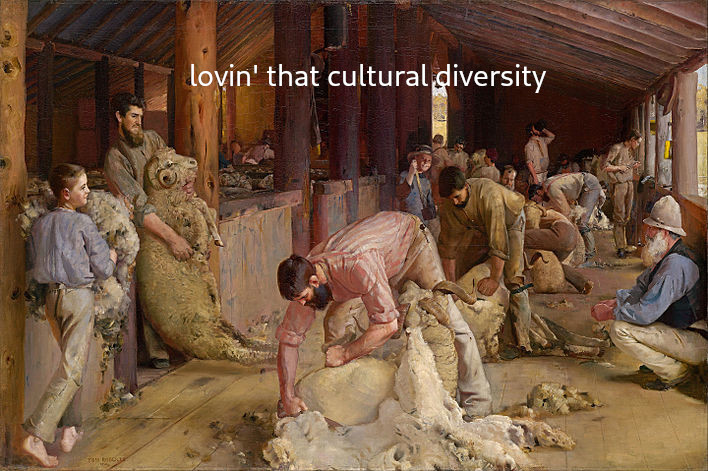
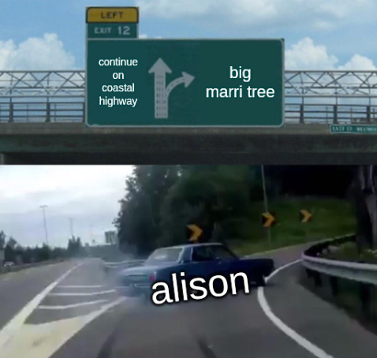
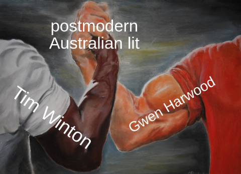
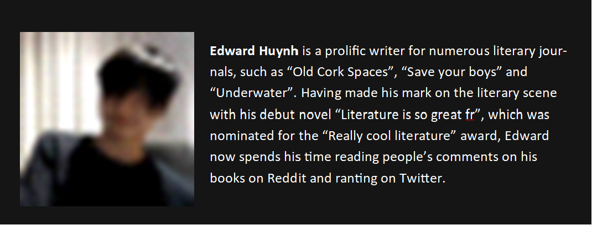

Thanks, Timothy. Sure sounds like Albany.
Tim Winton has a long record of making all sorts of brilliant contributions to literature, be it plays, prose, and even a movie! But, alas, we are not here to talk about Cloudstreet, or Breath, instead I'm going to be talking about The Turning (2004). Which, in my totally humble opinion, ranks up there with his heavy hitters.
The Turning is a pretty long anthology, so I'll definitely be talking about it again. But for now, I want to discuss my thoughts on just two of these short stories. Damaged Goods and Long, Clear View.
The majority of short stories about Vic Lang(arguably the protagonist of the whole anthology) is told by Vic himself. But not Damaged Goods. Instead, we are introduced to "the girl with the strawberry birthmark" mentioned in Long, Clear View from the perspective of Gail, Vic's wife. We learn of Vic's obsession with Alison, and discover that she ultimately perishes in a car crash.
Long, Clear View, on the other hand, is narrated from the perspective of a young Vic Lang, who recounts the violence and crime that permeates life in Angelus. We learn that Vic's father, Bob, leaves the family, and the story ends with Vic clutching his father's rifle and aiming at passing townsfolk.

Personally, I think that Winton portrays life as a Western Australian through the perspective of Vic. In his portrayal of the fictional town of Angelus, based on Winton's hometown Albany, Winton reflects on the violent, disjoint nature of regional Australian culture due to the social conflicts rooted in opposing identities. However, Winton's portrayal of Western Australian life is more nuanced, as he presents how the essence of Western Australian identity is interwoven with the influence of tragedy and loss.
With Tim Winton being a Western Australian author and all, it's probably best to talk about some recurring themes in his literature that are Australian specific. The one that comes to mind when reading Long, Clear View and Damaged Goods is the concept of Australian masculinity.
Throughout Australia's history, and certainly throughout its literature, we get glimpses of the stereotypical "white Aussie bloke"; the man of the house who struggles for the family, never showing any signs of weakness or vulnerability. Both of the short stories portray Vic as growing into this stereotype, and indicate that his dangerous childhood town induced his paranoia. Winton suggests that the unsafe societal environment of rural Australia leads to the masculine traits we see from Vic, namely his fascination with defending himself and labouring for his family without complaint.

In Long, Clear View, we get a bunch of negative talk from Vic, who tells himself that he’s “not a baby” and that he should “shut up and stop bawling”. Clearly, Vic has some troubles being open and emotional, preferring instead to keep his anxiety and fears to himself. The self-depreciating vernacular Vic directs to himself is symptomatic of the toxic masculine ideals of stoicism and self-hatred that are rooted into Vic's personality.
When his dad leaves, Vic assumes the status of a father to his remaining family, and is able to “break two tons of mallee roots”, with his hands becoming as “leathery as a man’s”. With his father out of the picture, Vic’s childhood is cut short as he matures into being the man of the house. By using visual imagery to present Vic in a masculine light, and through the tough, masculine adjective "leathery", Winton points out how growing up in struggling Australian households imposes a toxic masculinity onto young boys who are forced to grow into a demanding, labour-intensive lifestyle.
Now for the 'odd' part of the collection. Vic is... obsessed... to say the least, about a "Strawberry Alison" from his high-school. In Damaged Goods, Vic’s wife tells us that “the mark” Alison had since birth is “the root of [Vic’s] obsession” with her, due to "his adolescent attraction to the flawed and imperfect". Through the intimate 1st person perspective of Gail, we are directly presented with her emotional dismay at Vic's desire to protect those he naively deems as “damaged”. Winton further portrays Vic as victim to the masculine beliefs which make him overprotective. Clearly, the trauma of losing his father, the death of his sister and growing up in a dangerous, rural Australian town has left Vic pretty messed up, and desperate to take control of his life.
Near the end of the story, we learn that Alison and her girlfriend are “incinerated” after they “had hit a tree out on the coastal highway”. Now, not to freak you out or anything, but Alison literally predicts her own death via the poem she wrote in her final year of high-school.

Perhaps this could be alluding to the title of Gwen Harwood's Burning Sappho? I mean, the similarities are pretty obvious. Alison writes a poem, about two girls burning. Alison becomes a "born-again lesbian", with the word "lesbian" being derived from Sappho's home island. And both Harwood and Winton are classic Australian authors. I guess that means Vic's relationship with Alison was doomed from the beginning, with Gail recounting how Vic "dreamed of piling her into a car and tearing out of town". Vic charges himself with the duty to protect Alison, with his toxic masculine values of controlling and 'protecting' women kicked into full gear.

After the car crash, Vic “drove back out” to the tree and “thought of the crimson splash of flame Alison had sent forth”. Winton uses this vivid visual imagery of the scene, coupled with the fiery thermal imagery to indicate how our imagining of the traumatic loss of our loved ones is warped by the intensity of our emotions and, more specifically, our grief. Clearly, Winton wants us to understand how the trauma inflicted onto people through the death of loved ones wounds them psychologically. For Vic in particular, this results into a breakdown of his masculine persona, with him being "in the workshop, weeping over an old photograph". Poor guy.
Well, that's all I have to say about these two rather peculiar short stories. Next time I'll be talking about the very 'unpleasant' marriage of Raelene and Max.
See you then!



 (
( (
(